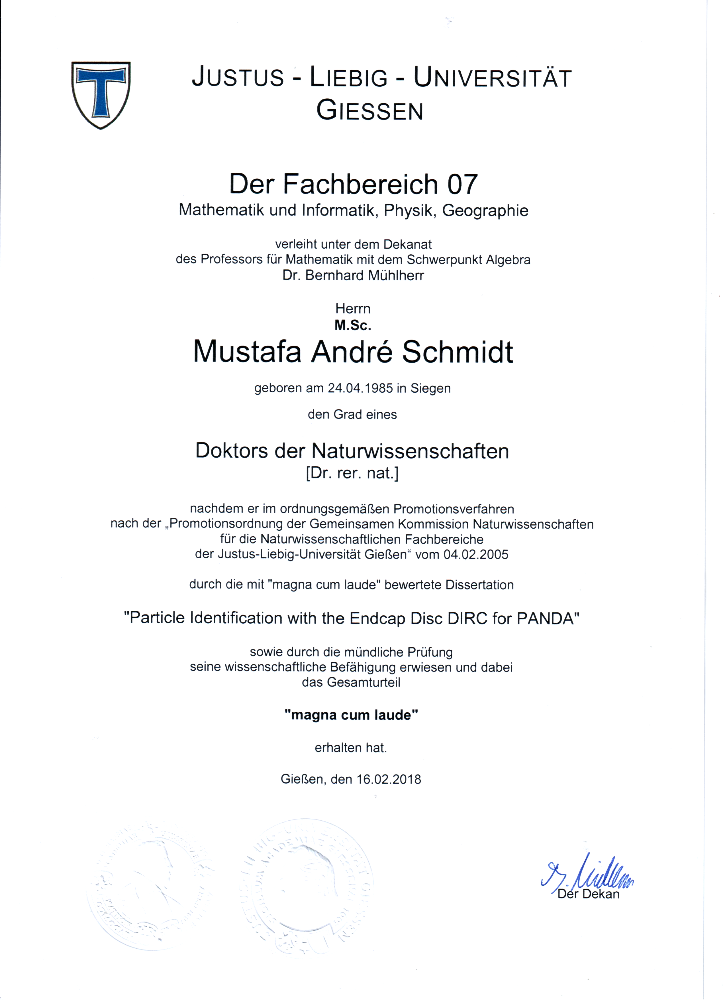

Mustafa Schmidt — Full Curriculum Vitae¶
IT System Engineer · Physicist · High-Performance Computing
Siegen, Germany
ORCID: 0000-0002-4467-2461
Profile¶
IT system engineer and physicist with professional experience in high-performance computing, scientific software, particle-detector development, Monte Carlo simulation, data analysis, university teaching, student supervision, and science communication. Experienced in maintaining research computing infrastructure and supporting scientific communities through the HPC.NRW network.
Research Interests¶
- Particle physics and medical physics
- Particle-detector and readout-system development
- Monte Carlo simulations
- Front-end electronics
- Reconstruction algorithms
- Scientific data analysis
- Artificial neural networks
- Science communication and outreach
Work Experience¶
IT System Engineer¶
University of Siegen, Siegen · July 2025–present
- Maintain and operate the university's HPC cluster.
- Participate in the HPC.NRW network.
- Serve as a co-administrator for OpenShift infrastructure.
Research Associate¶
University of Wuppertal, Wuppertal · April 2022–June 2025
- Worked on ATLAS computing, simulations, and data analysis.
- Optimized the ATLAS Geant4 detector simulation.
- Validated Monte Carlo event generators.
- Contributed to high-performance computing activities.
- Served as a radiation protection officer.
Research Associate¶
Justus Liebig University Giessen, Giessen · February 2018–March 2022
- Developed particle-detector systems and performed Monte Carlo simulations.
- Organized test-beam campaigns at CERN and DESY.
- Supervised students and interns.
- Taught university classes and contributed to science outreach.
Research Assistant¶
Justus Liebig University Giessen, Giessen · June 2017–December 2017
- Worked on detector development and Monte Carlo simulations.
- Helped organize test-beam campaigns at CERN and DESY.
Physicist¶
Steinel GmbH, Development Department, Herzebrock-Clarholz · September 2011–October 2014
- Designed lenses for motion sensors.
- Developed concepts for LED luminaires and their thermal management.
- Simulated and measured luminous flux.
Education¶
Dr. rer. nat. in Physics¶
Justus Liebig University Giessen · November 2014–February 2018
- Research group: Experimental Hadron and Particle Physics
- Supervisor: Prof. Dr. Michael Düren
- Dissertation: Particle Identification with the Endcap Disc DIRC at PANDA
- Published dissertation

M.Sc. in Physics¶
University of Siegen · July 2010–August 2011
- Research group: Experimental Particle Physics
- Supervisor: Prof. Dr. Ivor Fleck
- Thesis: Untersuchungen an einer TPC mit einer GEM als Gasverstärkung und Programmierung zugehöriger Simulationen
(Investigation of a TPC with a GEM for gas amplification and development of related simulations)
B.Sc. in Physics¶
University of Siegen · October 2006–June 2010
- Research group: Theoretical Particle Physics
- Supervisor: Prof. Dr. Wolfgang Kilian
- Thesis: Überprüfung der Tree-Unitarity-Bedingung im MSSM am Beispiel von Charginos
(Validation of the tree-level unitarity condition in the MSSM using charginos as an example)
Awards and Scholarships¶
- PANDA Outstanding Achievement Award 2020, PANDA Collaboration (March 2021) — awarded for science-outreach activities
- PANDA PhD Prize 2018, PANDA Collaboration (November 2018) — awarded for the collaboration's best doctoral thesis of 2018
- HGS-HIRe Doctoral Scholarship, Helmholtz Graduate School for Hadron and Ion Research (November 2014–May 2017)
- Exceptional Learning Achievement, Fürst-Johann-Moritz-Gymnasium (June 2006) — Aspects of the Mathematics of General Relativity
- First Prize, Fuel-Cell Student Competition, University of Siegen, Department of Chemistry (November 2003)
Additional Qualifications¶
- Appointment as Radiation Protection Officer under § 43 StrlSchV, District Government of Düsseldorf (August 2024)
- Radiation Protection Qualification S2.1 under § 47 StrlSchV, State Institute of North Rhine-Westphalia, Düsseldorf (August 2024)
- Science Communication and Teaching of Particle Physics, Netzwerk Teilchenwelt, Fulda (January 2018)
- Ten-Minute Speed-Typing Certificate, Stenography Club Auf den Hütten (September 1998)
Courses, Schools, and Internships¶
- 7th Workshop on Teaching Astroparticle and Particle Physics, Netzwerk Teilchenwelt, Fulda (January 2018)
- HGS-HIRe Lecture Week: Measuring Properties of Hadrons with PANDA and on the Lattice, Bad Münster am Stein (April 2016)
- Advanced Programming School, DESY, Hamburg (March 2016) — object-oriented programming, UML, memory optimization, and process parallelization
- RD51 School: Charge Transport in a GEM, CERN, Geneva (December 2010) — finite-element simulations with Ansys and Garfield++ for gas-amplification processes
- Radiation Protection Course S4.1, University of Siegen (April–September 2008)
- Electronics Workshop Internship, Krupp, Siegen (February 2004)
Teaching Experience¶
Lectures¶
- Electronics Laboratory, substitute lecturer, University of Wuppertal (winter semester 2023/24)
- Experimental Physics for Life Sciences, University of Siegen (summer semester 2023) — mechanics, thermodynamics, electrodynamics, atomic physics, and radioactivity
- Experimental Physics II: Electrodynamics, substitute lecturer, University of Wuppertal (summer semester 2023)
- Nuclear-Physics Measurement Methods in Medicine and Technology, guest lecturer, Justus Liebig University Giessen (summer semester 2021) — particle physics, detector physics, and high-energy physics experiments
Exercise Classes¶
- Experimental Physics I: Mechanics, University of Wuppertal (winter semester 2023/24)
- Experimental Physics II: Electrodynamics, University of Wuppertal (summer semester 2023)
- Experimental Physics III: Quantum Mechanics, University of Wuppertal (winter semester 2021/22)
- Advanced Particle Physics, Justus Liebig University Giessen (summer semester 2019)
- Experimental Physics VI, Justus Liebig University Giessen (summer semesters 2018 and 2015)
- Experimental Physics V: Nuclear and Particle Physics, Justus Liebig University Giessen (winter semesters 2017/18 and 2015/16)
- Mathematical Methods of Physics, University of Siegen (winter semester 2009/10)
Tutorials and Seminars¶
- Physics for Dentistry and Medicine, Justus Liebig University Giessen (summer semester 2017)
- Physics for Medical, Dental, and Veterinary Students, Food Chemists, and Chemistry Teachers, Justus Liebig University Giessen (winter semesters 2016/17 and 2014/15)
- Mathematical Methods of Physics II, University of Siegen (summer semester 2010)
- English for Young Physicists, Justus Liebig University Giessen (winter semesters 2020/21 and 2019/20)
- Energy Transition, Justus Liebig University Giessen (summer semester 2021)
- Physics Group for Younger Students, Fürst-Johann-Moritz-Gymnasium (August 2004–June 2006)
Laboratory Courses¶
- Undergraduate Physics Laboratory, Justus Liebig University Giessen (summer 2020 and winter 2020/21)
- Physics Laboratory for Biology and Chemistry Students, Justus Liebig University Giessen (winter semesters 2020/21 and 2019/20)
- Rotating-Mirror Experiment, Justus Liebig University Giessen (summer semester 2019) — determination of the speed of light using a Foucault-style setup
Science Communication and Outreach¶
- Particle-Physics Exhibition, Dresden (March 2023) — supported a public science-communication stand
- Particle-Physics Enrichment Lectures, various schools (November 2020)
- Particle-Physics Masterclass, Johanneum Herborn (January 2020)
- Particle-Physics Masterclass, University of Bonn (September 2019)
- Highlights der Physik, University of Bonn (September 2019) — dark matter, astroparticle physics, and public demonstrations
- Particle-Physics Masterclasses, Justus Liebig University Giessen (August 2019 and April 2018)
- Particle-Physics Lecture, Rivius-Gymnasium Attendorn (February 2019)
- Particle-Physics Masterclass, Weidigschule Butzbach (January 2019)
- Particle-Physics Masterclass, Goethe-Schule Wetzlar (June 2018)
The masterclasses introduced high-school students to particle physics through cloud-chamber construction and the analysis of ATLAS data.
Talks and Conferences¶
Invited Talks¶
- DIRC2019, Rauischholzhausen (September 2019) — DIRC Options for the Super Charm-Tau Factory
- DIRC2017, Rauischholzhausen (August 2017) — PID Algorithms for the PANDA Endcap Disc DIRC
Conference Contributions¶
- CHEP 2024, Kraków (October 2024), poster — Streamlining ATLAS Monte Carlo Generator Validation with PAVER
- ICHEP 2024, Prague (July 2024), talk — Charged Particle and Underlying-Event Measurements with the ATLAS Detector
- ACAT 2024, New York (March 2024), talk — Optimizing the ATLAS Geant4 Detector Simulation
- DPG Spring Meeting 2023, Dresden (March 2023), talk — Geant4 Optimizations in ATLAS
- DPG Spring Meeting 2023, Dresden (March 2023), talk — Monte Carlo Generator Validation in ATLAS with JEM/PAVER
- DPG Spring Meeting 2023, Dresden (March 2023), talk — Obtaining the Total Cross-Section and ρ Parameter from Elastic Proton–Proton Scattering at √s = 900 GeV with the ATLAS Subdetector ALFA
- International Symposium on Multiparticle Dynamics (ISMD2022), Pitlochry (August 2022), talk — Forward Proton Measurements with ATLAS
- DPG Spring Meeting 2022, Heidelberg (March 2022), talk — Towards a Super Charm-Tau Factory in Russia
- DPG Spring Meeting 2021, online (August 2021), talk — PANDA Outreach Projects
- DPF2019, Boston (July 2019), talk — The Innovative Design of the Endcap Disc DIRC for PANDA at FAIR
- New Trends in High-Energy Physics 2019, Odessa (May 2019), talk — The PANDA Experiment at FAIR
- EuNPC 2018, Bologna (September 2018), talk — The Endcap Disc DIRC for PANDA at FAIR
- DPG Spring Meeting 2018, Bochum (February 2018), talk — The Endcap Disc DIRC for PANDA at FAIR
- DPG Spring Meeting 2017, Münster (March 2017), talk — Particle Identification with the Disc DIRC at PANDA
- TIPP2017, Beijing (March 2017), talk — Endcap Disc DIRC for PANDA at FAIR
- DPG Spring Meeting 2016, Darmstadt (March 2016), talk — The Barrel and Disc DIRC Counters for the PANDA Experiment at FAIR
- DPG Spring Meeting 2015, Heidelberg (March 2015), talk — Simulation Studies for the PANDA Endcap Disc DIRC
Workshop Talks¶
- Workshop on Future Super c-τ Factories, online (November 2021) — Simulation of the SCT Detector PID
- FARICH and FDIRC Options for the SCTF PID System, online (November 2020) — Simulation of the SCT Detector PID
- Joint Workshop on Future Charm-Tau Factory, Moscow (September 2019) — Simulation Studies for DIRC Options at SCTF
- FAIR2015, Novosibirsk (November 2015) — Disc DIRC for PANDA at FAIR
Physics Analysis Roles¶
- Editorial Board Member, JDM–ALP with AFP, ATLAS analysis
ANA-EXOT-2019-28(August 2022–present) - Analysis Team Member, elastic scattering at 900 GeV with ALFA,
ANA-STDM-2020-23(May 2021–present) - Analysis Team Member, elastic scattering at 13 TeV with β* = 90 m,
ANA-STDM-2020-25(May 2021–present) - ATLAS Qualification Task, CERN (May 2021–April 2022) — alignment of the ALFA detector for 900 GeV beam energy
Supervision¶
ATLAS Qualification Tasks¶
- Per-Oleg Puhl, Justus Liebig University Giessen (July 2024–present)
- Saleh Bashiri, IFJ PAN Kraków (April 2023–August 2024)
Doctoral Theses¶
- Simon Bodenschatz, Justus Liebig University Giessen (February 2020–present) — readout development, data analysis, Giessen Cosmic Station, and simulations
- Ilknur Köseoğlu, Justus Liebig University Giessen (March 2018–present) — readout electronics, data acquisition, mechanics, and test-beam analysis for the PANDA Endcap Disc DIRC
Master's Theses¶
- Vincent Wettig, Justus Liebig University Giessen (April 2021–March 2022) — simulation studies for novel focusing elements at a future Super Charm-Tau Factory
- Sophie Kegel, Justus Liebig University Giessen (April 2021–March 2022) — development of compact focusing optics for a Disc DIRC Cherenkov detector
- Simon Bodenschatz, Justus Liebig University Giessen (June 2018–March 2020) — construction of a cosmic-muon tracking test stand
- Klim Bigunenko, Justus Liebig University Giessen (November 2014–October 2015) — simulation studies of the efficiency of a cosmic-muon test stand
Bachelor's Theses¶
- Jan Hofmann, Justus Liebig University Giessen (April–October 2018) — Monte Carlo determination of Disc DIRC prototype performance for the 2018 test beam
- Jhonatan Pereira-de-Lira, Justus Liebig University Giessen (April–October 2018) — simulation studies for upgrading a cosmic-muon test stand
- Lisa-Marie Brück, Justus Liebig University Giessen (April–October 2018) — characterization of optical filters and adhesives for the PANDA Endcap Disc DIRC
- Sophie Kegel, Justus Liebig University Giessen (April–October 2018) — automated characterization of focusing elements for the PANDA Endcap Disc DIRC
- Simon Bodenschatz, Justus Liebig University Giessen (April–October 2017) — spatial-resolution measurements of an MCP-PMT using delay-line readout
- Tobias Walkenhorst, Bielefeld University of Applied Sciences and Steinel GmbH (June–December 2013) — development and evaluation of a balancing circuit for lithium-ion batteries
Seminar Presentations and Study Projects¶
- Andre Aßmann, bachelor's seminar, Justus Liebig University Giessen (October 2021–March 2022) — elastic particle scattering and the ATLAS ALFA detector
- Niclas Fiedler, bachelor's seminar, Justus Liebig University Giessen (October 2021–March 2022) — cosmic radiation and the Giessen Cosmic Station
- Tim Patrick Schneider, bachelor's seminar, Justus Liebig University Giessen (October 2019–February 2020) — cosmic radiation and the Giessen Cosmic Station
- Mathis Ortmann, bachelor's seminar, Justus Liebig University Giessen (October 2018–January 2019) — light transport and DIRC-detector operation
- Jan Hofmann, master's laboratory modules, Justus Liebig University Giessen (January–September 2019 and from September 2019)
- Rebecca Seip, Friedrich-Magnus-Gesamtschule Laubach (September 2019–June 2021) — development of a SiPM readout system for future DIRC detectors
- Sophie Kegel, master's laboratory modules, Justus Liebig University Giessen (January 2019 onward)
- Lisa-Marie Brück, master's laboratory module, Justus Liebig University Giessen (from May 2019)
- Sebastian Zimmermann, master's specialization module, Justus Liebig University Giessen (April–September 2015) — transmission and reflection measurements of synthetic fused-silica radiators
- Andreas Giese, Bielefeld University of Applied Sciences and Steinel GmbH (October 2012–April 2013) — introduction of RFID technology in production and logistics
Interns and Guest Students¶
- Alpin Cencer, school intern (July 2021) — data analysis for the Giessen Cosmic Station
- Jascha Balzter, school intern, Gymnasium Philippinum Marburg (July 2021 and January 2018) — muon measurements, data analysis, particle physics, and cloud-chamber construction
- Clarissa Troidl, school intern, Gymnasium Philippinum Marburg (July 2021) — muon measurements and data analysis
- Lukas Düren, school intern, Gesamtschule Gießen-Ost (June 2021) — Java programming and optimization algorithms
- Leon Wulf, school intern, Rivius-Gymnasium Attendorn (August 2019) — particle physics, data analysis, and masterclass preparation
- Annette Bremer, Celine Gerspach, and Finn Guthörl, school interns, Weidigschule Butzbach (June 2019) — particle physics and data analysis
- Namitha Chithirasreemadam, guest student from India (May–July 2019) — particle-identification concept for the Super Charm-Tau Factory
- Fabian Seipp, school intern, Anne-Frank-Schule Linden (May 2019) — particle physics, data analysis, and energy transition
- Rebecca Seip, school intern, Friedrich-Magnus-Gesamtschule Laubach (May 2019) — particle physics, data analysis, and energy transition
- Moustapha Lo Kholl, guest student from Senegal (April–June 2015) — renewable energy and DESERTEC
Professional and Academic Activities¶
- Local Organizer, EurizonPlus Detector School, Wuppertal (July 2022–present)
- Creator and Maintainer, Physics Matters YouTube Channel (January 2020–present) — Physics Matters
- Outreach Commissioner, PANDA Collaboration (December 2019–November 2021)
- PANDA Masterclass Development and Project Organization, Justus Liebig University Giessen (June 2019–December 2021)
- Straße der Experimente, organization and planning, Justus Liebig University Giessen (March–May 2019)
- PANDA Disc DIRC Test Beam, organization and operation, CERN (July–August 2018)
- CERN Student Excursion, organization and travel supervision (March 2018)
- PANDA Disc DIRC Test Beam, organization and operation, DESY (October 2016)
- DIRC2015 Workshop, organizer, Schloss Rauischholzhausen (November 2015)
- PANDA Disc DIRC Test Beam, organization and operation, CERN (May–June 2015)
- Weltmaschine Particle-Physics Exhibition, organization and planning, University of Siegen (March–September 2010)
Memberships¶
- ATLAS Collaboration, qualified author (May 2021–present)
- CREMLINplus, Work Package 5.6 (January 2019–March 2022) — development of a Cherenkov detector for particle identification at a future Super Charm-Tau Factory
- Directorate Member, II. Physikalisches Institut, Justus Liebig University Giessen (July 2017–June 2019)
- PANDA Collaboration, collaboration member (October 2015–April 2022)
- CERN, user (May 2015–present)
- GSI Helmholtz Centre for Heavy Ion Research, user (December 2014–March 2022)
- German Physical Society (DPG), member (January 2006–present)
IT Skills¶
| Area | Technologies |
|---|---|
| Programming | C, C++, Python, Bash, VHDL, JavaScript, SQL, Kotlin |
| Operating systems | Linux, Windows, MS-DOS |
| Virtualization and containers | Docker, Apptainer, Singularity, VirtualBox, VMware vSphere |
| Version control and automation | GitHub, GitLab, Git, CI/CD |
| Simulation | Geant4, PandaRoot, Garfield++, Elmer, Ansys, Zemax |
| Data analysis | ROOT, Marlin, Origin |
| Scientific and mathematical tools | Mathematica, Maple, Maxima, Mathcad |
| Graphics and layout | Inkscape, GIMP, EAGLE |
| Documentation | LaTeX, Markdown, OpenOffice, Microsoft Office |
Languages¶
- German: Native
- English: Very good command
- Latin: Latinum
References¶
Available upon request.